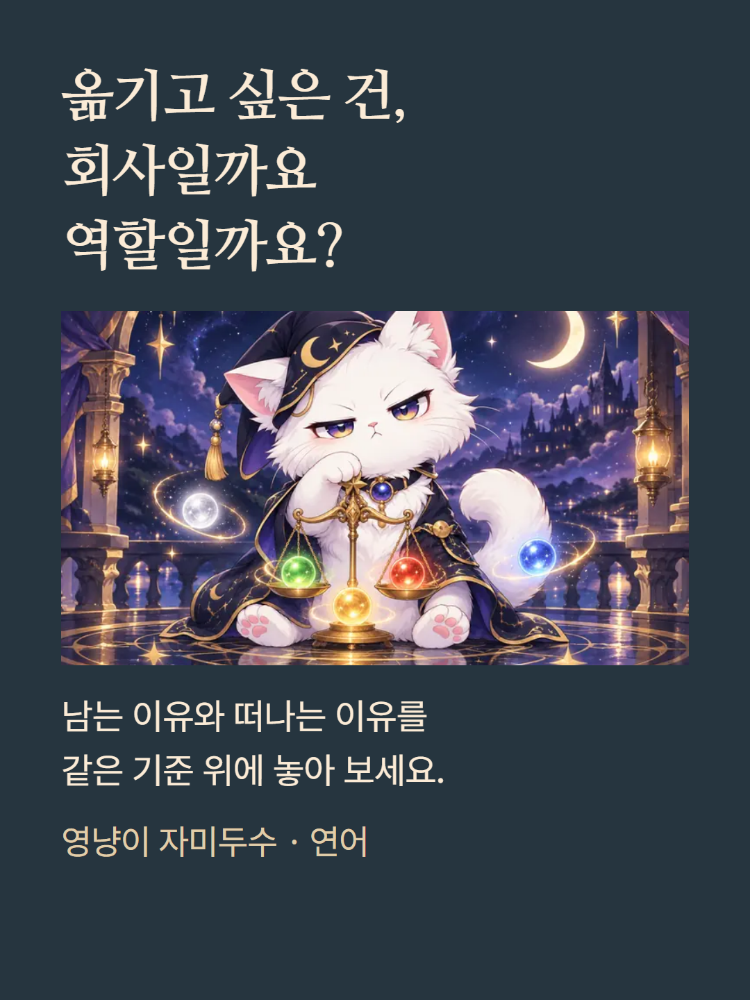
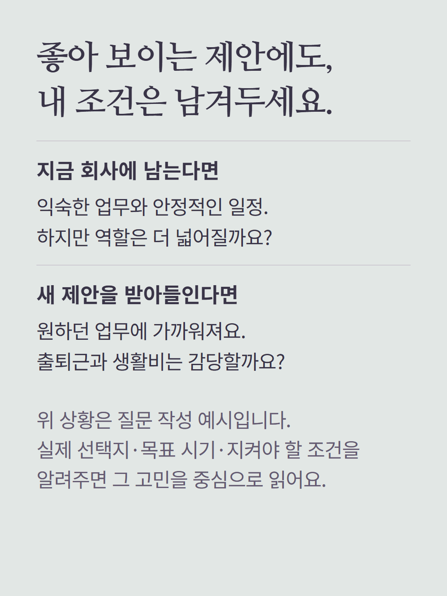
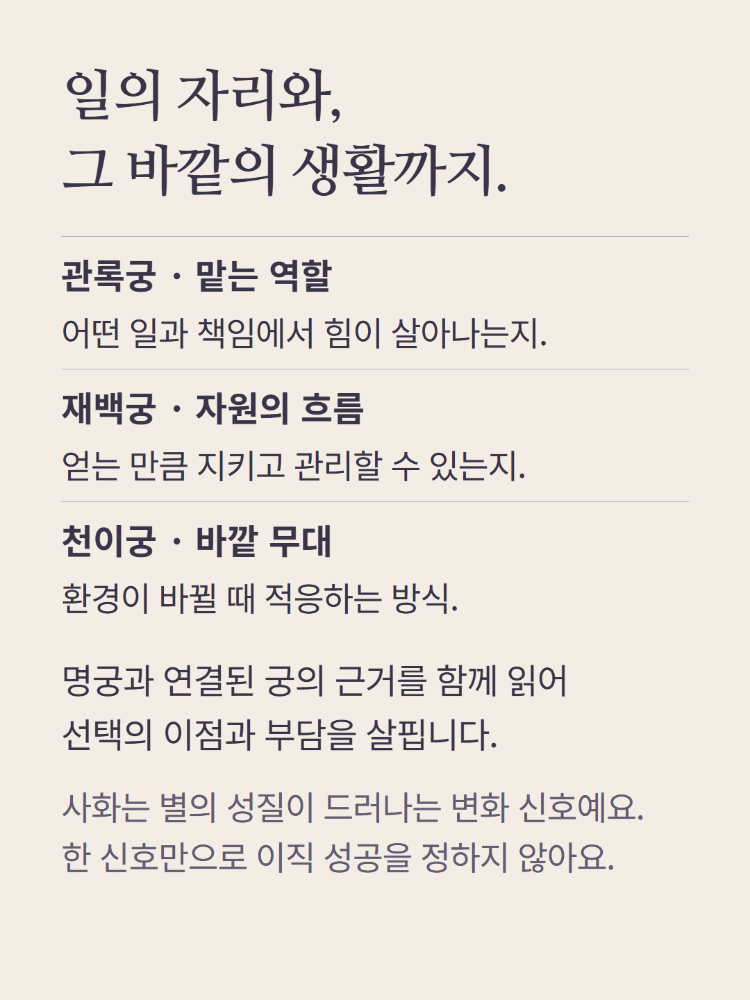
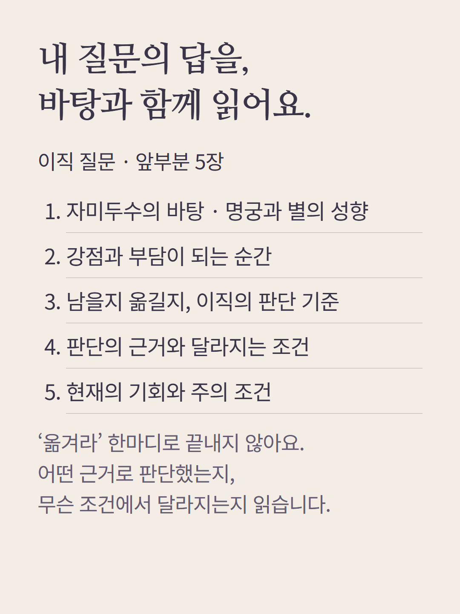
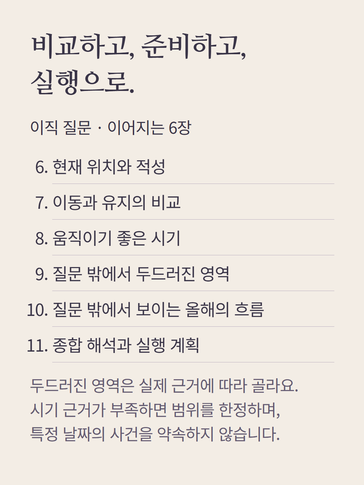
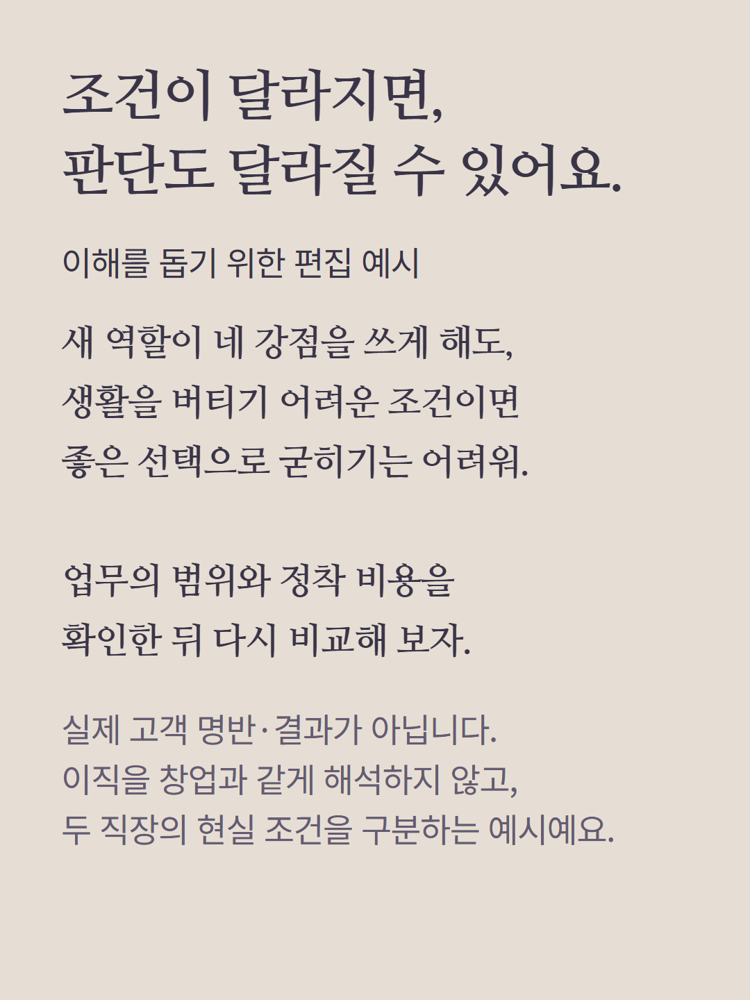
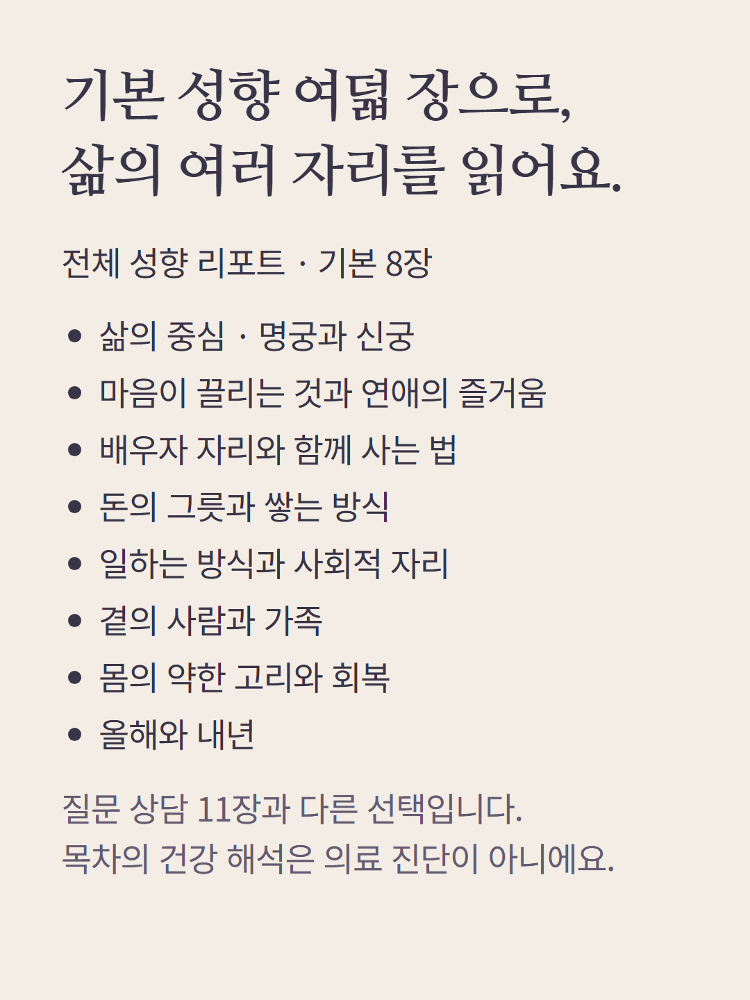
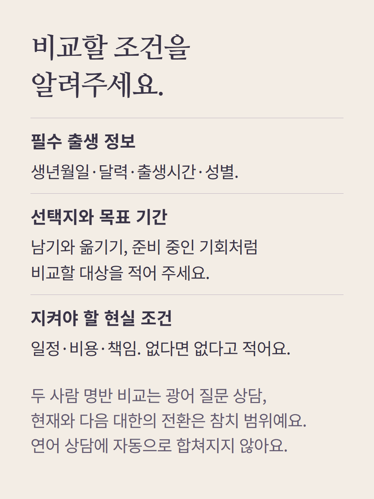
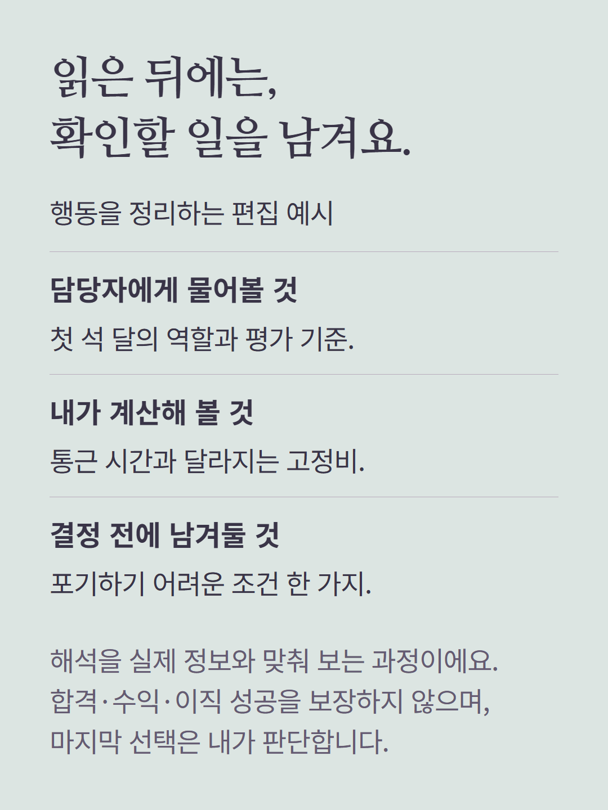
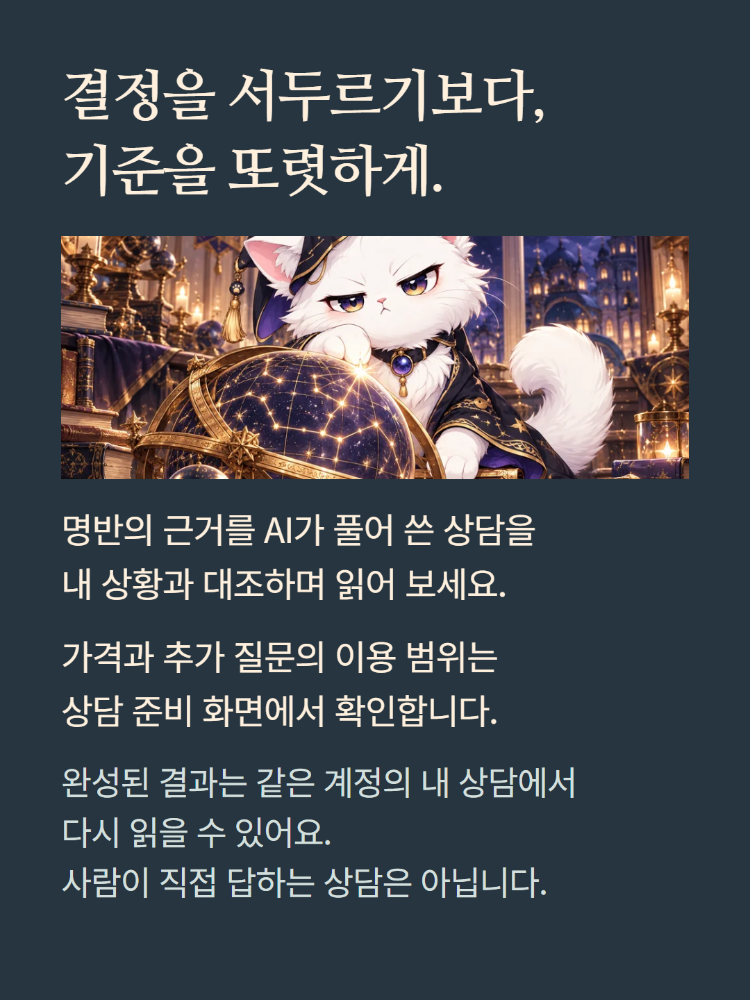

자미두수 연어 질문 상담은 진로·시험·재물·이동 등 중요한 선택의 조건과 준비를 다룹니다. 여기에는 이직 질문 11장과 별도 기본 성향 리포트 8장의 목차를 구분해 소개합니다. 질문과 상담 종류에 따라 구성이 달라집니다. 이직은 직장 간 이동으로 다루며 사업 창업과 같게 해석하지 않습니다. 시기는 실제 계산 근거의 범위에서만 읽고 성공이나 날짜를 보장하지 않습니다. 안내의 비교표와 대화는 편집 예시이며 실제 고객 결과가 아닙니다. AI가 작성하는 상담이며 가격과 추가 질문 조건은 기존 화면에서 확인합니다.